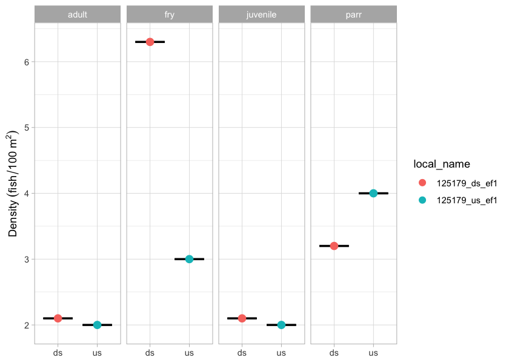
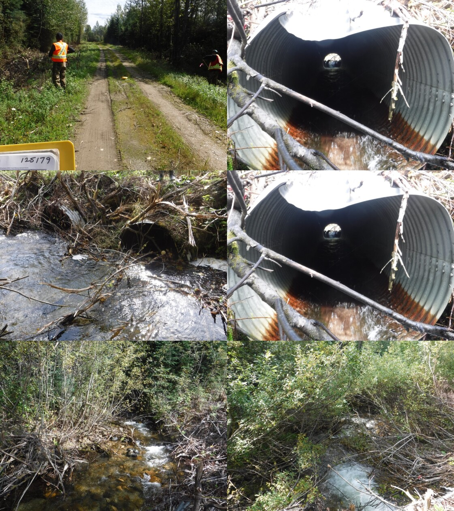
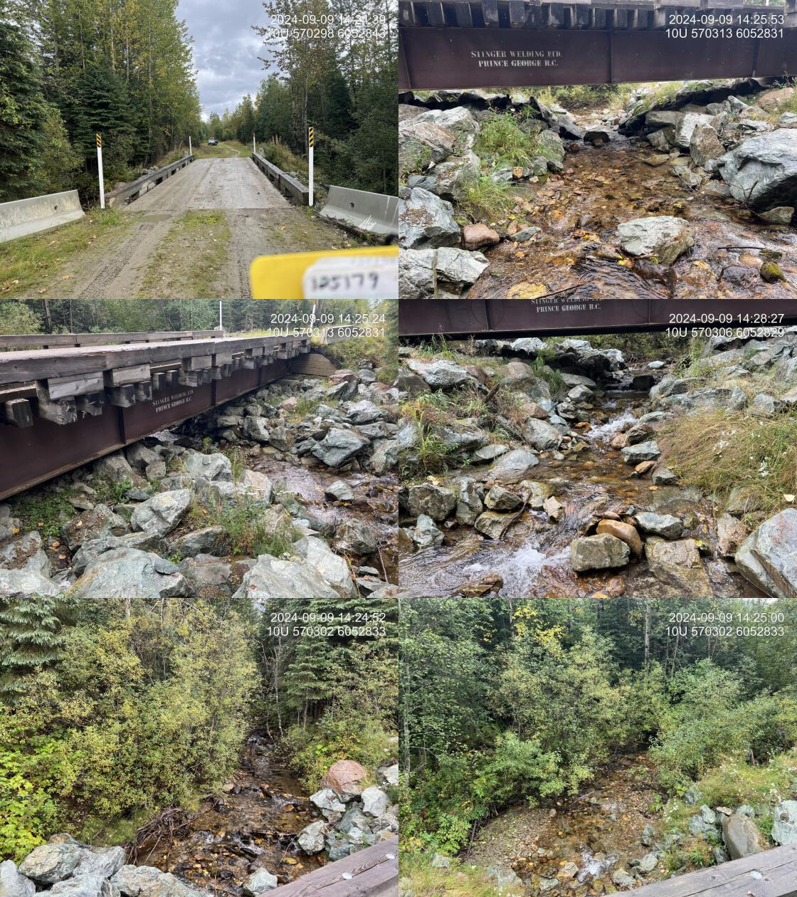
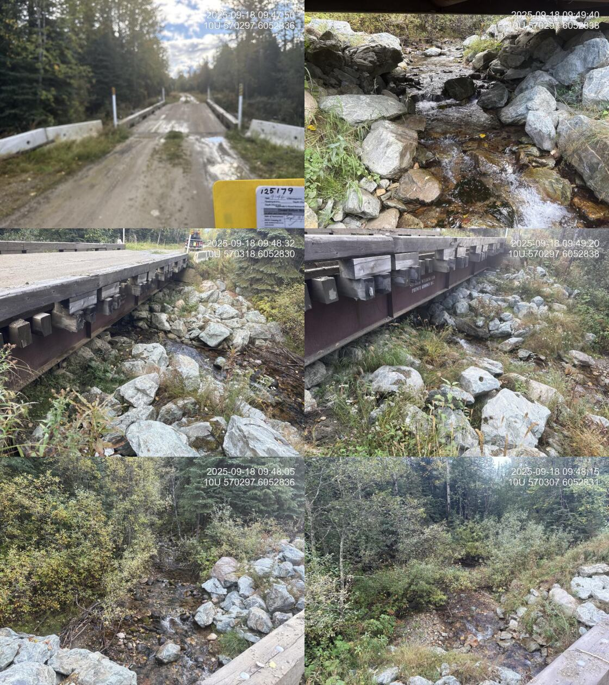

Tributary to Missinka River - 125179 - Monitoring Appendix
Effectiveness monitoring was conducted in 2025 at PSCIS crossing 125179 on the Chuchinka-Missinka FSR. Site location, background, prior-year assessment and replacement history, and earlier effectiveness monitoring results are documented in Irvine (2020), Irvine and Winterscheidt (2023), and Irvine and Schick (2025); the 2024 site appendix is available at https://www.newgraphenvironment.com/fish_passage_peace_2024_reporting/trib-to-missinka.html.
Monitoring Form
2025 effectiveness monitoring form results are summarized in Table 5.35.
tab_monitoring |>
dplyr::filter(`Pscis Crossing Id` == my_site) |>
dplyr::mutate(across(everything(), as.character)) |>
tidyr::pivot_longer(
cols = everything(),
names_to = "Variable",
values_to = "Value"
) |>
fpr::fpr_kable(
caption_text = paste0("Summary of effectiveness monitoring form results for site ", my_site, " in ", params$project_year, "."),
scroll = gitbook_on
)| Variable | Value |
|---|---|
| Pscis Crossing Id | 125179 |
| Stream Name | Tributary to Missinka River |
| Road Name | Chuchinka-Missinka FSR |
| Crossing Subtype | BRIDGE |
| Span | 16 |
| Width | 4.8 |
| Assessment Comment | Routine effectiveness evaluation. Structure was replaced several years ago and monitoring is ongoing. Electrofishing with fish over 65mm in length PIT tagged, as well as EDNA sampling was conducted in 2025. |
| Dewatering Notes | Stream is flowing nicely through the construction footprint with no evidence of aggregation, or any sign of dewatering |
| Velocity Notes | Velocity within project footprint is slightly faster than naturalized areas upstream and downstream because of the construction from riprap however, overall they do not appear to prevent migration of juveniles larger than approximately 130mm. During higher flow times of the year velocity may be quite higher, however. |
| Constriction Notes | Channel is constricted within the 4 - 5m upstream and downstream of the bridge with channel widths ranging from 2.5 - 3.4m. |
| Substrate Notes | Substrate is filling in nicely with gravels and cobble/boulder stone lines with a composition comparable to upstream and downstream within natural areas of the stream. |
| Riparian Notes | Overall, the riparian footprint disturbed is quite small and shrub growth from the edges of the footprint is beginning to fill in the upstream and downstream edges. |
| Flow Depth Notes | Flow depth within the construction footprint are comparable to those upstream and downstream in natural areas with some deeper pockets scoured adjacent to stone lines and placed boulders within the channel. |
| Stability Notes | Structure appears stable with no indication of any issues. |
| Revegetation Notes | Adjacent to the bridge there’s only a small amount of herbaceous regrowth in between heavily rip wrapped areas. It is expected that as tsime passes fine substrates will infiltrate the riprap more during high flow events, and that those areas will colonize more with natural herb and shrub species over time. |
| Cover Notes | Placed riprap boulders and developed stone lines have created areas of bubble curtain and shallow pool cover throughout the construction footprint. Overhead cover from vegetation is extremely minimal still however some willow and other shrub regrowth indicates it will improve overtime. |
| Maintenance Notes | No maintenance required |
Fish Sampling
Electrofishing was conducted downstream and upstream of PSCIS crossing 125179 in 2025. Per-site capture results are in Table 5.36; densities are in Table 5.37 and Figure 5.32.
| site | passes | ef_length_m | ef_width_m | area_m2 | enclosure |
|---|---|---|---|---|---|
| 125179_us_ef1 | 1 | 45 | 2.2 | 99.0 | partial enclosure |
| 125179_ds_ef1 | 1 | 35 | 2.7 | 94.5 | partial enclosure |
| local_name | species_code | life_stage | catch | density_100m2 | nfc_pass |
|---|---|---|---|---|---|
| 125179_ds_ef1 | Rainbow Trout | adult | 2 | 2.1 | FALSE |
| 125179_ds_ef1 | Rainbow Trout | fry | 6 | 6.3 | FALSE |
| 125179_ds_ef1 | Rainbow Trout | juvenile | 2 | 2.1 | FALSE |
| 125179_ds_ef1 | Rainbow Trout | parr | 3 | 3.2 | FALSE |
| 125179_us_ef1 | Rainbow Trout | adult | 2 | 2.0 | FALSE |
| 125179_us_ef1 | Rainbow Trout | fry | 3 | 3.0 | FALSE |
| 125179_us_ef1 | Rainbow Trout | juvenile | 2 | 2.0 | FALSE |
| 125179_us_ef1 | Rainbow Trout | parr | 4 | 4.0 | FALSE |
|
* nfc_pass FALSE means fish were captured in final pass indicating more fish of this species/lifestage may have remained in site. Mark-recaptured required to reduce uncertainties. |
my_caption <- paste0('Densities of fish (fish/100m2) captured upstream and downstream of PSCIS crossing ', my_site, ' in ', params$project_year, '.')
fish_abund |>
dplyr::filter(site == my_site, species_code != "NFC") |>
ggplot2::ggplot(ggplot2::aes(x = location, y = density_100m2, color = local_name, fill = local_name)) +
ggplot2::geom_boxplot(fill = "lightgray", color = "black", alpha = 0.7) +
ggplot2::geom_dotplot(binaxis = "y", stackdir = "center", dotsize = 0.8) +
ggplot2::facet_grid(. ~ life_stage, scales = "fixed") +
ggplot2::theme_light() +
ggplot2::theme(
legend.position = "right",
axis.title.x = ggplot2::element_blank()
) +
ggplot2::ylab(expression(Density ~ (fish/100 ~ m^2)))
Figure 5.32: Densities of fish (fish/100m2) captured upstream and downstream of PSCIS crossing 125179 in 2025.
Environmental DNA
eDNA samples were collected upstream and downstream of PSCIS crossing 125179 in 2025 as part of the program-wide eDNA sampling effort. The reference site at PSCIS crossing 125180, located on the same road as documented in Irvine and Schick (2025), was also sampled for eDNA in 2025. Per-position detection results for both sites are presented in Table 5.38. Detections are based on the standard ddPCR call threshold of ≥4 positive droplets; format is CODE(max_droplets), with * flagging samples UNBC reran. Site-level detail across all sampled crossings is in Appendix - Environmental DNA Results, and the interactive Peace eDNA map provides a toggleable per-species view.
edna_results_125179_mon |>
fpr::fpr_kable(
caption_text = paste0("eDNA detection results at crossing ", my_site, "."),
scroll = FALSE
)| Site ID | UNBC ID | Detected | Sub-threshold | Not detected |
|---|---|---|---|---|
| 125179_ds_ed1a | M41349 | RAIN(309) | BULT(1)* | GRAY(0), SOCK(0) |
| 125179_us_ed1a | M41351 | RAIN(383)* | — | BULT(0), GRAY(0), SOCK(0) |
| 125180_ds_ed1 | M41353 | BULT(4), RAIN(330) | — | GRAY(0), SOCK(0) |
| 125180_us_ed1 | M41354 | RAIN(293) | BULT(3) | GRAY(0), SOCK(0) |
Photos
# crossing_all_<year> photos, oldest to newest. One chunk each so every photo
# carries its own caption and cross-reference.
my_photo_2019_mon <- fpr::fpr_photo_pull_by_str(str_to_pull = 'crossing_all_2019')
my_photo_2024_mon <- fpr::fpr_photo_pull_by_str(str_to_pull = 'crossing_all_2024')
my_photo_2025_mon <- fpr::fpr_photo_pull_by_str(str_to_pull = 'crossing_all_2025')
my_caption_2019_mon <- paste0('PSCIS crossing ', my_site, ' in 2019.')
my_caption_2024_mon <- paste0('PSCIS crossing ', my_site, ' in 2024.')
my_caption_2025_mon <- paste0('PSCIS crossing ', my_site, ' in ', params$project_year, '.')
Figure 5.33: PSCIS crossing 125179 in 2019.

Figure 5.34: PSCIS crossing 125179 in 2024.

Figure 5.35: PSCIS crossing 125179 in 2025.
Conclusion
At the time of reporting, the structure at PSCIS crossing 125179 appears stable and the site is showing positive signals of recovery. Continued effectiveness monitoring at this site is recommended in future years to extend the multi-year time series of structure performance and fish use.